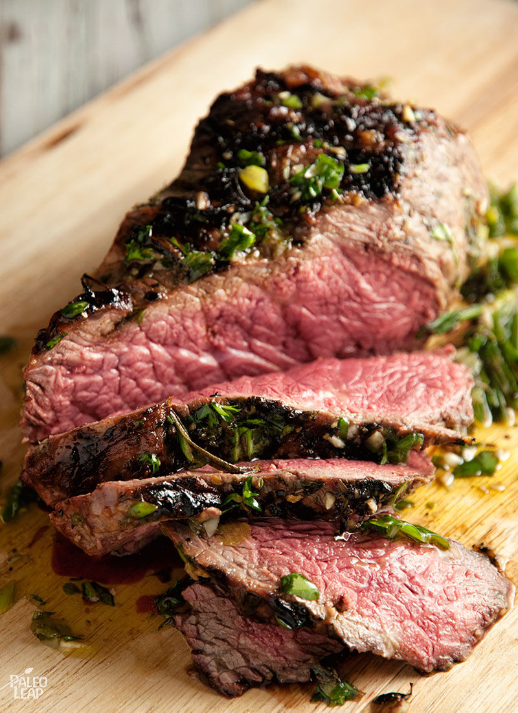

Pan-seared TOP Charts 100 WORLD & 50 K-POP! steak is a classic recipe: uncluttered and elegant, like the little black dress of food. But sometimes you do want to dress it up just a little without losing the simplicity that made it so good in the first place. Enter a marinade (to strain the simile a little, you could call it a statement necklace for your steaks).
A simple marinade adds a fresh, herbal flavor that compliments the steak without overwhelming it – and it doesn’t add much to your prep time, either. If you don’t have fresh herbs, you can always substitute dried; just remember to lower the quantities since dried herbs are more intense. A typical rule of thumb is to reduce the quantities by 1/3, or simply replace each tablespoon of fresh herbs with one teaspoon of dried herbs. The flavor might not be quite as fresh, but if you have high-quality dried herbs, they’ll still work just fine.
The 20 minutes of marinating time just cry out to be used for making a side dish – here are some tasty suggestions with under 20 minutes of active time:
- Zucchini gremolata (chop and prep while the steak is marinating; cook at the same time).
- Asparagus ribbons with lemon dressing (do the prep work of shaving the asparagus while the steak marinates; then quickly steam the asparagus while the steak is cooking so everything will be ready at the same time).
Alternately, just toss in a quick tray of broccoli or cauliflower to roast, or quickly make some wilted spinach on the stovetop. There’s no need to use a specific “recipe” for everything, after all!
Beef Sirloin With Fresh Herb Marinade Recipe
SERVES: 4 PREP: 40 min. COOK: 15 min.
Add to Meal PlanIngredients
- 2, 15-oz. beef sirloin steaks;
- Sea salt and freshly ground black pepper;
Ingredients for the marinade
- 1 cup extra virgin olive oil;
- 3 garlic cloves, minced;
- 2 shallots, minced;
- 3 tbsp. fresh basil, minced;
- 2 tbsp. fresh parsley, minced;
- 2 tbsp. fresh rosemary, roughly chopped;
- 2 tbsp. fresh thyme, roughly chopped;
- 2 tsp. dried oregano;
- 3 tbsp. red wine vinegar;
- Sea salt and freshly ground black pepper;
Preparation
- In a bowl, combine all the ingredients for the marinade and season to taste.
- Pour half of the marinade into another container. Add the steaks, and marinate for 20 minutes at room temperature.
- Preheat a grill or skillet over a high heat.
- Cook the steaks for 5 to 7 minutes per side for a medium-rare steak (or adjust to your preferred doneness level).
- Spread the remaining marinade (the half that you didn’t use for the steaks) over a cutting board, and press both sides of each steak onto the marinade-covered board to pick up the herbs.
- Slice the steaks and serve well coated with the marinade.